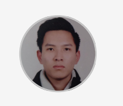

|

Long
|
About meI am currently a student and in the process of getting my Bachelor degree in Informatics in Sofian University st. Kliment Ohridski - Faculty of Mathematics and Informatics. I have studied since my high-school years computer science and more specifically the programming language C++, and I am motivated to continue on with learning and working on the field of embedded programming and low level languages. Education, training and work experience
In high school it was required for us to do internship in companies, so I was and intern in a company called "Naicoms", where I learned and done projects in the field of HTML, CSS and JavaScript. Sofian Professional Gymnasium for Electronics John Atansov In my high school years I specialized in System Programming and specifically I spend most of my time in learning the programming language C++. I graduated from Sofian Professional Gymnasium for Electronics John Atanasov with a normal diploma and a specialized degree for computer literacy. https://spge-bg.com Sofian University st. Kliment Ohridski - Faculty for Mathematics and Informatics In university the main programming language that is focused on in my specialty and course is the programming language C++, where we go from he beginning and all the basics things for the language and from there we build up to more complex things. https://www.fmi.uni-sofia.bg/bg MMS Star Camp is a four-weeks training initiative that gives extensive knowledge in the area of C and Embedded programming. |